Префектура Тиба · Татэяма · джин и гостевой дом
TAIL в Татэяме: джин из одного растения, гостевой дом и офис для мечтателей
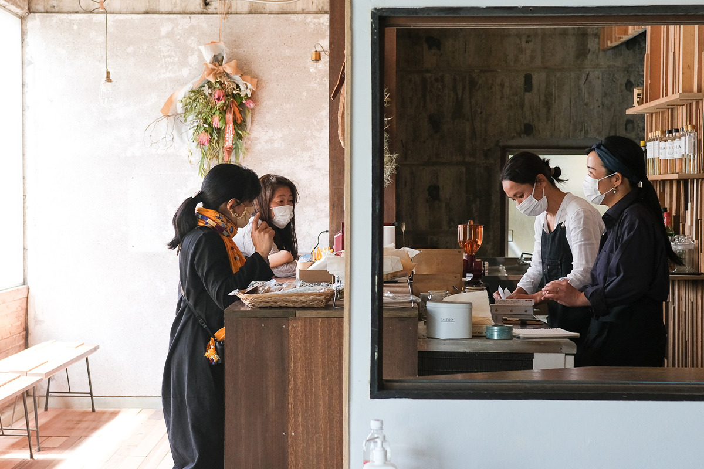
На южной оконечности полуострова Босо, в семи минутах ходьбы от станции Татэяма, в 2021 году открылся TAIL. Здесь пьют кофе и джин, ночуют и работают, а заодно узнают, чем жив город.
Место
Дом для тех, кто начинает своё дело
Татэяма стоит на самом юге полуострова Босо, в префектуре Тиба. Весной 2021 года здесь открылся комплекс TAIL. Название сложено из первых букв слов Tateyama Area Incubation Lab, то есть «лаборатория-инкубатор района Татэяма». В нём есть кафе и общий офис, но главная задача другая: дать людям повод взяться за что-то новое.
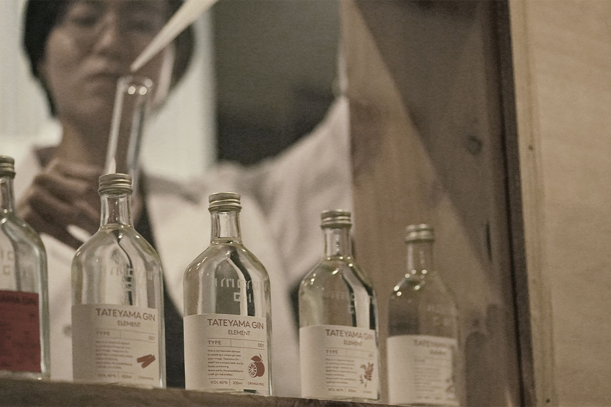
Под комплекс перестроили бывший главный офис закрывшейся компании, которая делала картонные коробки. Пространство поделено на три части: «работа», «ночлег» и «увлечения». На первом этаже кафе и бар с собственной винокурней джина, на втором гостевой дом, на третьем общий офис. TAIL задуман и как место, где можно делать то, что давно хотелось, и как современный городской туристический центр для приезжих.
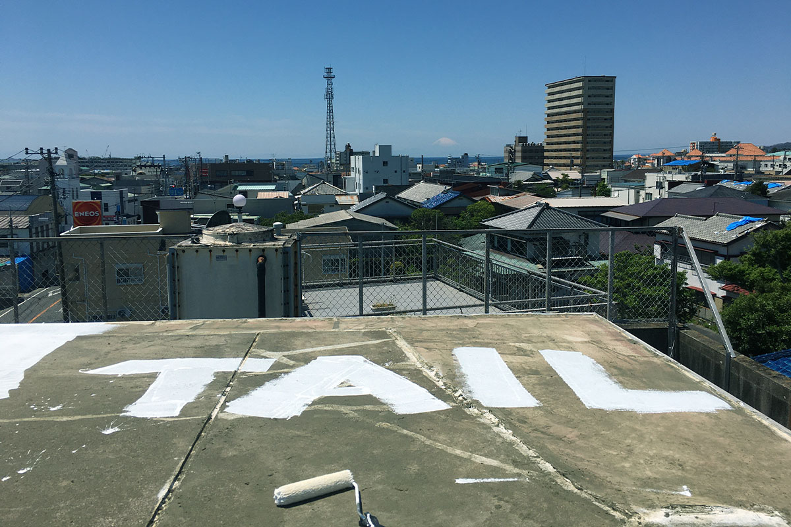
Идея принадлежит архитектору Сатоси Оте, который приехал в Татэяму по программе «Отряд поддержки местного развития»: так в Японии называют горожан, которые на несколько лет переезжают в провинцию помогать местным проектам. Концепцию комплекса и его продуктов он разрабатывал вместе с токийской студией 301.inc, у которой есть своё общественное пространство в столице. Сам Ота ведёт всё от начала до конца: исследование, финансы, дизайн, стройку и работу комплекса.
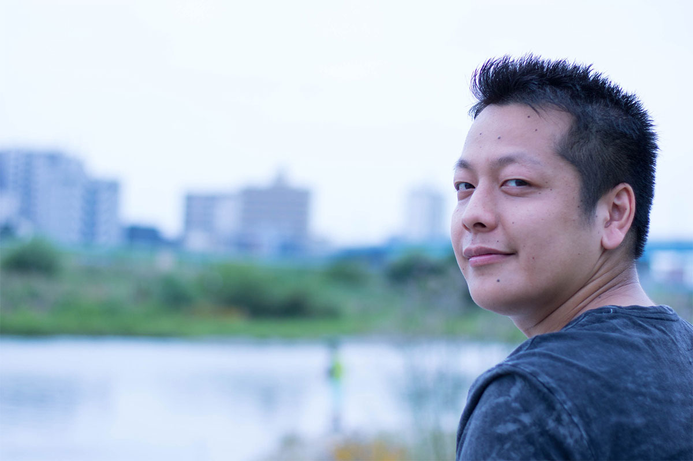
Город
Почему именно Татэяма
По словам Оты, сначала был не проект, под который искали город, а город, в котором потом родился проект. Всё началось со знакомства с владельцем хостела tu.ne. Hostel, который участвует в обновлении города через ремонт старых зданий. Ещё до приезда Оты он называл себя «микродевелопером» и занимался необычной недвижимостью.
«Мне было интересно, чем он занимается, я несколько раз приезжал к нему в гости. От него я и узнал об отряде поддержки и подал заявку»
Сатоси Ота
Поначалу Татэяма показалась ему обычным провинциальным городом. Но чем ближе он знакомился с местными, тем больше его удивляли люди.
«Здесь много людей с характером, немного колючих. Ехать в Татэяму мне хотелось, чтобы увидеть их, поэтому и переезд дался совсем легко»
Сатоси Ота
Люди Татэямы так увлекли Оту, что в итоге он стал жить на два города. Характер местных он объясняет на примере кислой солёной сливы умэбоси.
«Токиец скажет: ох, кисло. А житель Татэямы скажет: кисло, передержали в засолке. Так говорит только тот, кто сам её готовил и знает весь процесс. Татэяма живёт немного наособицу, всего здесь не купишь, поэтому приходится делать самим. Сетевых кофеен тут нет, зато много обжарщиков: люди сами варят себе хороший кофе»
Сатоси Ота
Как устроено
Чем можно заняться в TAIL
TAIL создавали как место, где такие люди могли бы собираться и пробовать себя. Кухня в кафе сдаётся в аренду: например, местная жительница печёт здесь свою фокаччу и сладости без глютена и на день становится хозяйкой кафе. В свободной зоне первого этажа Ота хотел со временем продавать и выставлять вещи местных мастеров.
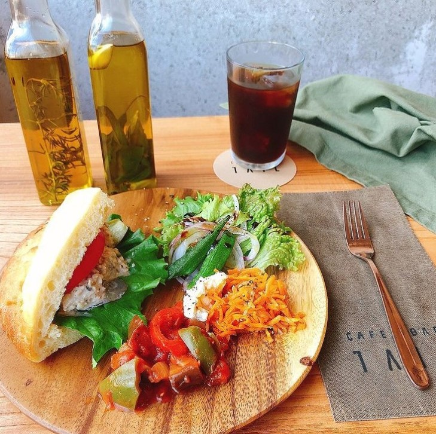
Комплекс задуман и как вход в округ Ава, юг полуострова. В TAIL висит карта округа, на которую гости и хозяева клеят визитки мест, чтобы новичку было с чего начать. Татэяма компактна, от моря до гор рукой подать, и выбор здесь большой. TAIL хочет стать точкой, откуда приезжие легко находят связь с городом.
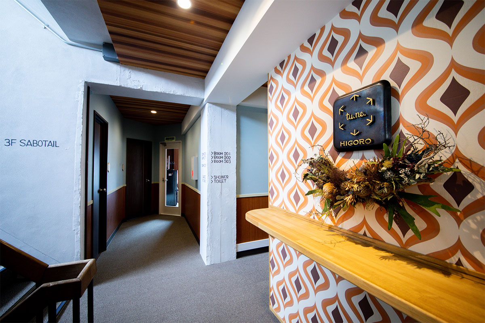
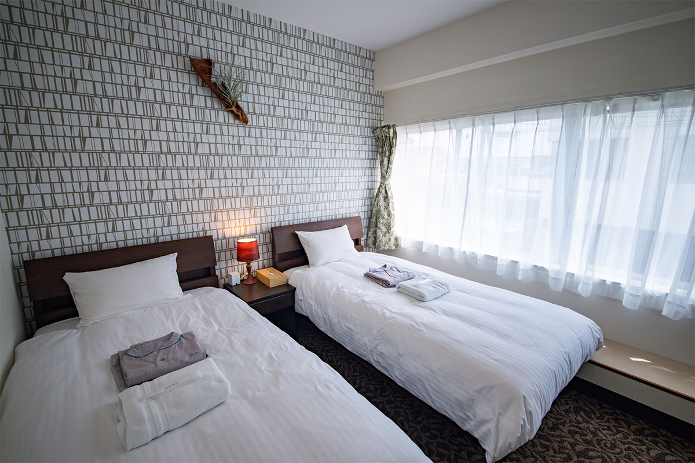
Общий офис на третьем этаже называется SABOTAIL. Его девиз: «офис, где меньше всего работают в Японии». Работа здесь понимается как продолжение игры, а офис как место для фантазий, из которых вырастает своё дело. В 2021 году его открытие планировалось на ноябрь.
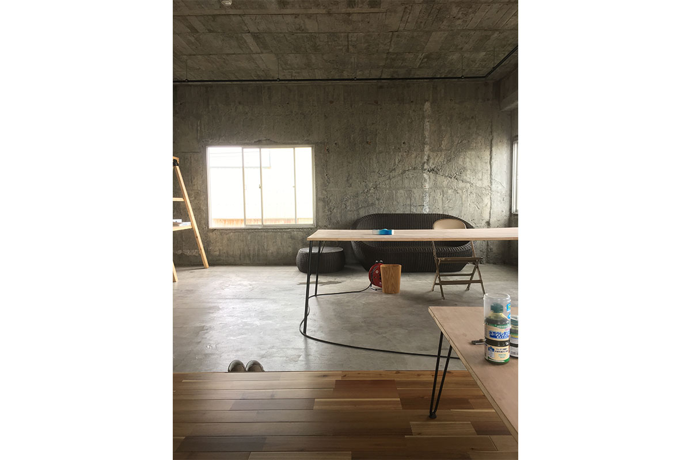
Джин
TATEYAMA GIN, который смешивают сами
Первым проектом TAIL стал собственный джин TATEYAMA GIN. Обычный джин ароматизируют сразу несколькими растениями, начиная с можжевельника. Здесь каждое растение перегоняют отдельно, и в каждой бутылке слышен вкус одного ингредиента.
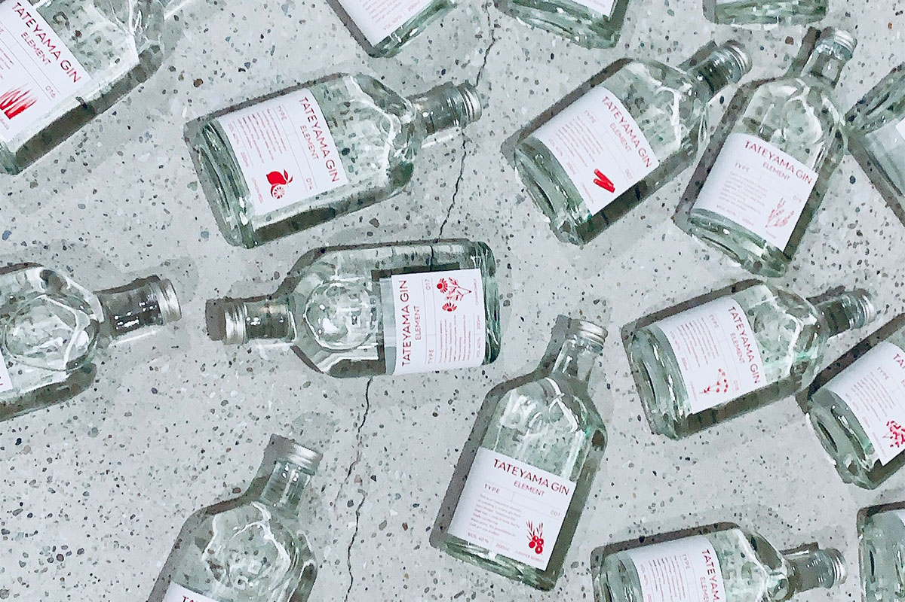
Ингредиентов 21: имбирь, японский перец сансё, кориандр и другие пряности и травы. Покупатель может смешать дистилляты по своему вкусу и собрать джин, которого больше нет ни у кого.
«Хотелось, чтобы главной ценностью стало само удовольствие сделать что-то своими руками»
Сатоси Ота
Для города, где всё привыкли делать сами, лучшей бутылки и не придумать.
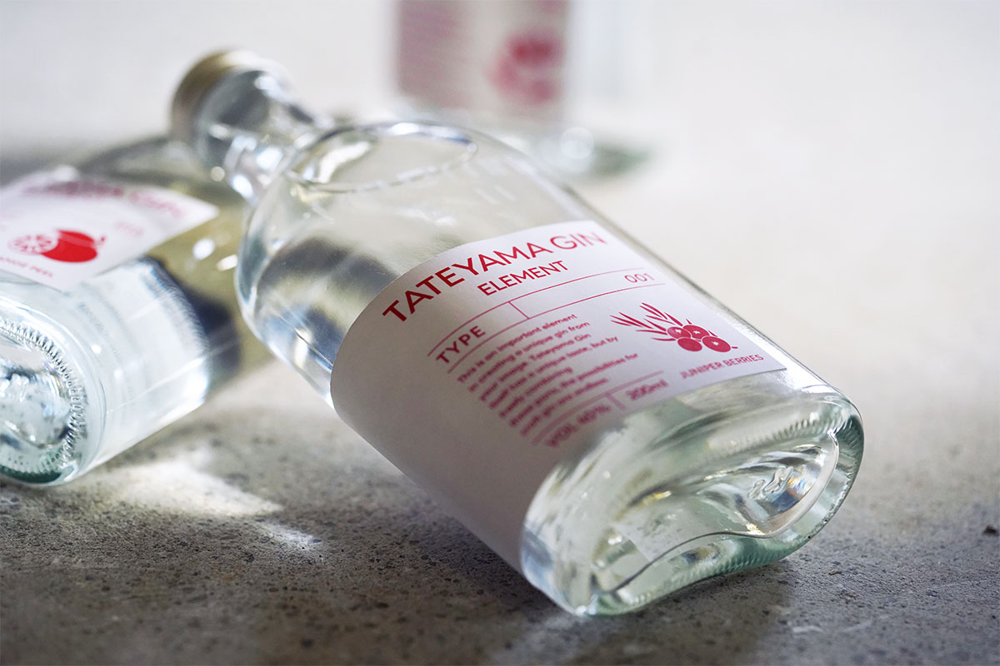
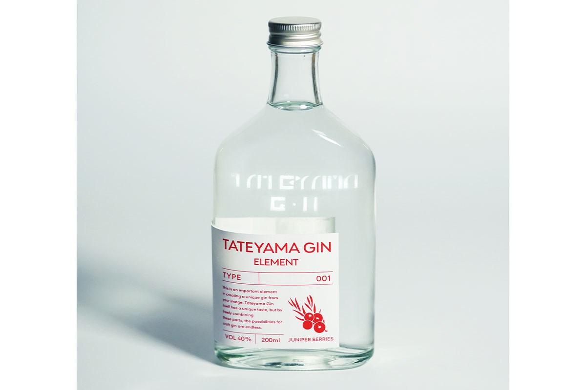
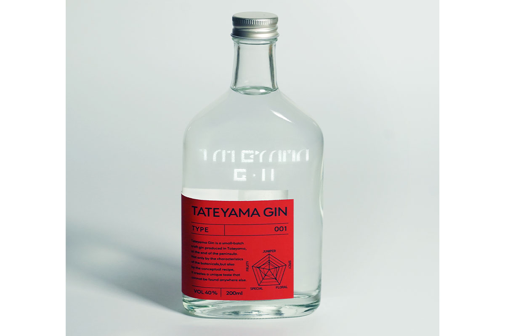
В джине тоже заложена главная идея TAIL: сделать что-то своё.
«Интереснее всего тот момент, когда из ничего появляется что-то. Думаю, людей, которые хотят пройти этот путь вместе, на самом деле очень много»
Сатоси Ота
TAIL
- Адрес
- префектура Тиба, Татэяма, Ходзё, 1758
- Часы работы
- кафе: среда, четверг, пятница 11:30–15:00; бар: пятница и суббота 17:00–21:00 (последний заказ в 20:00); гостевой дом tu.ne.HIGORO: 9:00–21:00
- Как добраться
- 7 минут пешком от станции Татэяма (линия JR Утибо)